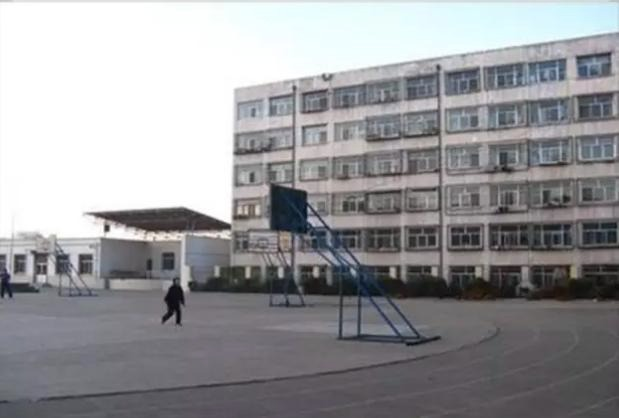
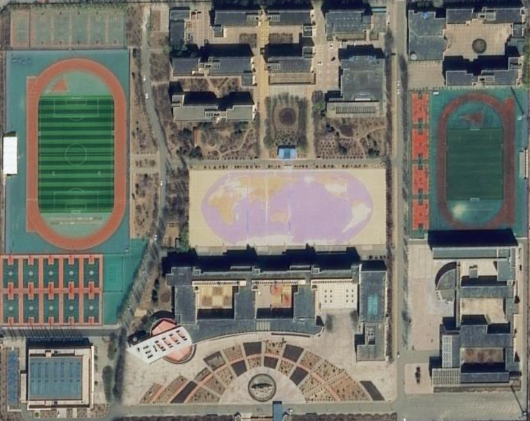

2016-2020年二本达线率由76.37%提升至93%以上，持续突破。
1998-2003年中考综合评价“五连冠”，晋北初中教育标杆。
南开大学、北航、同济等20余所“双一流”高校优质生源基地。
大同二中教育集团，南校区+主校区双翼驱动，引领区域教育均衡。
全国现代教育技术示范学校、全国课改先进集体、全国青少年校园足球特色学校。
山西省文明单位、山西省数字校园示范校、山西省防震减灾示范学校。